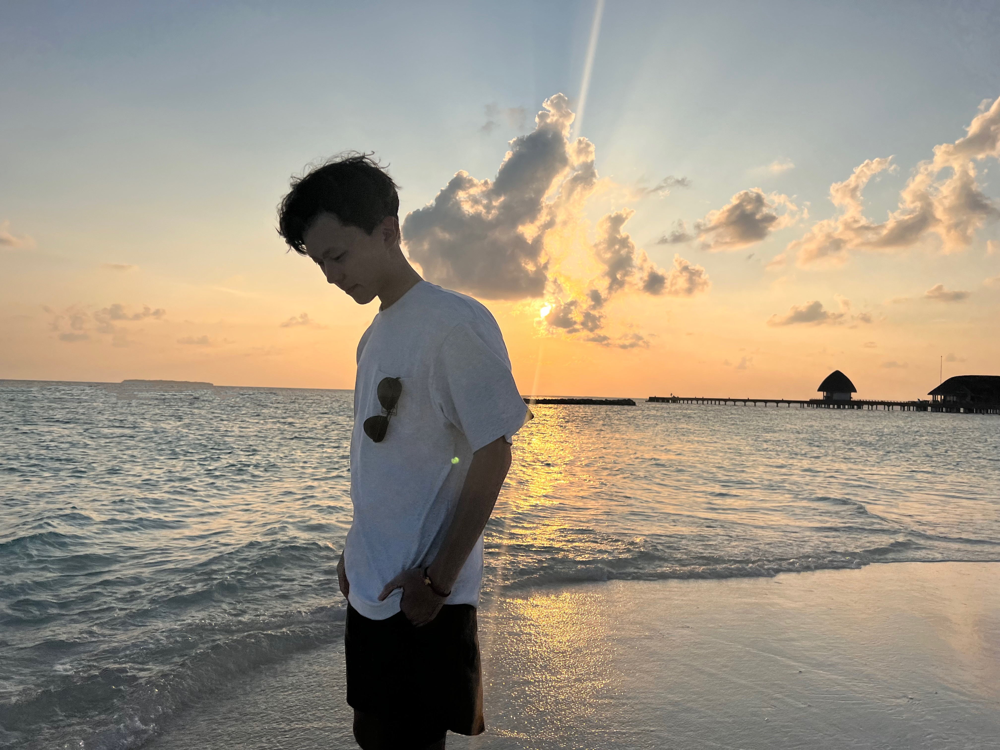

Renrui Zhang 张仁瑞Ph.D. CandidateMultimedia Laboratory (MMLab)
|

|
Education
- [2017-2021] 🎉 I received my B.E. degree from Peking University, awarded Outstanding Graduate (Top 5%).
- [2020-2021] I worked as a visiting student in University of Pennsylvania, supervised by Prof. Jianbo Shi.
- [2021-Now] 💪 I'm pursuing my Ph.D. in MMLab, CUHK, supervised by Prof. Hongsheng Li and Prof. Xiaogang Wang.
- [2021-2024] I worked as a research intern at Shanghai AI Lab, supervised by Dr. Peng Gao.
- [2024-2025] I worked as a research intern at LLaVA team, ByteDance, Seattle, supervised by Dr. Chunyuan Li.
Biography
I am a final-year Ph.D. candidate at MMLab, CUHK, and got my B.E. degree from Peking University.
📌 My research interests include Large Multimodal Models, Vision-language Learning, Emboided AI, and 3D Vision.
✉️ I'm looking for undergraduate and graduate students for academic cooperation. Discussions are welcomed!
News
- [2025-02] Three papers accepted by CVPR 2025
- [2025-01] Five papers accepted by ICLR 2025, two Spotlight 🎉
- [2025-01] 🔥 We release "Image Generation with CoT", the first work investigating CoT strategies (e.g., Test-time Scling, RL, and Reflection) in autoregressive text-to-image generation.
- [2025-01] 🎉 "Video-MME", is thrilled to be selected as One of the 14 Groundbreaking Stuides in 2024.
- [2024-12] Two papers accepted by AAAI 2025
- [2024-08] 🔥 We release "LLaVA-OneVision", the latest LLaVA model for image, video, and image-text interleaved scenarios with superior performance.
- [2024-07] Four papers accepted by ECCV 2024
- [2024-07] 🔥 We release "LLaVA-NeXT-Interleave" for multi-image instruction tuning and "MAVIS" for multimodal mathematical reasoning.
- [2024-05] Three papers accepted by ICML 2024
- [2024-03] Seven papers accepted by CVPR 2024, two Highlight 🎉
- [2024-03] 🔥 We release "MathVerse", a novel mathematical benchmark with the first CoT evaluation strategy.
- [2024-02] One paper accepted by ICRA 2024
- [2024-01] Four papers accepted by ICLR 2024
Selected Projects
* Equal Contribution # Project Lead-
🔥 Can We Generate Images with CoT? Let's Verify and Reinforce Image Generation Step by StepCVPR 2025[Paper] [Code 🌟500+]
-
🔥 MME-CoT: Benchmarking CoT in LMMs for Reasoning Quality, Robustness, and EfficiencyarXiv 2025
-
MAVIS: Mathematical Visual Instruction Tuning with an Automatic Data EngineICLR 2025
-
MathVerse: Does Your Multi-modal LLM Truly See the Diagrams in Visual Math Problems?ECCV 2024
-
🔥 LLaMA-Adapter: Efficient Fine-tuning of Language Models with Zero-initialized AttentionICLR 2024
-
🔥 LLaVA-OneVision: Easy Visual Task TransferTMLR 2025
-
🔥 LLaVA-NeXT-Interleave: Tackling Multi-image, Video, and 3D in Large Multimodal ModelsICLR 2024 Spotlight 🎉
-
Point-Bind & Point-LLM: Aligning Point Cloud with Multi-modality for 3D Understanding, Generation, and Instruction FollowingarXiv 2024
-
Video-MME: The First-Ever Comprehensive Evaluation Benchmark of Multi-modal LLMs in Video AnalysisCVPR 2025
-
🔥 Personalize Segment Anything Model with One ShotICLR 2024
-
🔥 SAM2Point: Segment Any 3D as Videos in Zero-shot and Promptable MannersarXiv 2024
-
🔥 HybridVLA: Collaborative Diffusion and Autoregression in a Unified Vision-Language-Action ModelarXiv 2025
-
Lift3D Foundation Policy: Lifting 2D Large-scale Pretrained Models for Robust 3D Robotic ManipulationCVPR 2025
-
RoboMamba: Multimodal State Space Model for Efficient Robot Reasoning and ManipulationNeurIPS 2024
Selected Awards
- [2021-06] Outstanding Graduate, Peking University (Top 5%)
- [2020-09] Academic Excellent Scholarship (Ranked 1st/73)
- [2020-09] Merit Student PaceSetter, Peking University (Ranked 1st/73)
- [2019-09] Academic Excellent Scholarship (Ranked 4th/73)
- [2019-09] Merit Student, Peking University (Ranked 4th/73)
- [2016-07] China Youth Technology Innovation Award (The Only 1 in Province)
- [2016-10] 1st Prize in Provincial Chinese Physics Olympiad (Ranked 18th in Province)
- [2015-10] 2nd Prize in The Chinese 15th Awarding Program for Future Scientist (Ranked 1st in Province)
- [2013-03] 1st Prize in Provincial China Adolescent Robotics Competition (Ranked 1st in Province)
Hobbies
Soccer ⚽️, Moive 🎬, Singing 🎤, Piano 🎹, Violin 🎻, Snorkeling 🤿, HotToys 🦸♂️, FC Online 🎮, PUBG 🐓